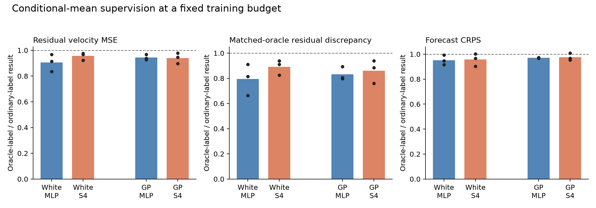

24 fresh fits: two sources, two heads, two target estimators and three independent data/initialization pairs. Every pair of label modes sees exactly the same 1,536,000 training interpolants. Ordinary CFM labels are replaced by their conditional expectation given the normalized history and interpolated point. Both modes use oracle-discrepancy validation selection; this differs from the original baseline's selection policy.

Bars average three paired replicate-specific ratios; dots show every replicate. Below 1 favours oracle supervision. No parameter or checkpoint was selected by these test scores.
| Source | Head | Training label | Residual MSE | Oracle discrepancy | CRPS | Weighted Jacobian error |
|---|---|---|---|---|---|---|
| white | mlp | stochastic | 0.12591 | 0.05967 | 0.50730 | 0.24440 |
| white | mlp | oracle | 0.11379 | 0.04713 | 0.48195 | 0.21772 |
| white | s4 | stochastic | 0.11754 | 0.05177 | 0.50595 | 0.25229 |
| white | s4 | oracle | 0.11233 | 0.04614 | 0.48280 | 0.23047 |
| gp | mlp | stochastic | 0.04914 | 0.01582 | 0.49319 | 0.60906 |
| gp | mlp | oracle | 0.04639 | 0.01314 | 0.47853 | 0.54499 |
| gp | s4 | stochastic | 0.05799 | 0.02466 | 0.49228 | 0.62481 |
| gp | s4 | oracle | 0.05448 | 0.02105 | 0.47983 | 0.58508 |
Conditional-mean labels remove conditional target noise while preserving the population regression optimum. The analytical generator is known only in this controlled synthetic study; this is not a deployable forecasting method. A finite history pool is reused, so the empirical objective is not exactly unchanged. Improvements show sensitivity to conditional-mean supervision at this training budget and validation policy. The intervention also replaces one realized future per training history with knowledge of the population conditional law, so it does not isolate empirical label variance alone or establish intrinsic architecture failure or a Hessian mechanism.
Boundary-selected checkpoints: 11/24. Literal assignment-rule successes: 0/24. Full per-draw results, source/head interactions, numerical audits and caveats are in summary.json and docs/followup_label_noise_protocol.md.
Euler 64 versus 128 was checked on eight contexts from the first replicate for all eight cells; the largest absolute fair-CRPS shift on that subset is 0.00191. This is a limited numerical sensitivity check, not a complete solver audit or proof that tiny score differences are resolved.
These are the original raw-coordinate metrics: PC1 velocity MSE, residual-PC velocity MSE and generated-to-target roughness ratio. The roughness target is 1. The original literal pass rule is retained without changing its thresholds. Velocity PCA is fitted separately for each source; use the common-target forecast scores for direct source-quality comparisons. The velocity rule is two-sided: residual MSE must be within 20% of PC1 MSE. Unequal PC-specific label-noise floors complicate that comparison; low residual error alone does not pass it. Smoothness alone also does not establish conditional forecasting quality.
| Source | Head | Training label | PC1 MSE | Residual MSE | Roughness ratio |
|---|---|---|---|---|---|
| white | mlp | stochastic | 6.10936 | 0.12591 | 1.01884 |
| white | mlp | oracle | 5.73443 | 0.11379 | 1.02128 |
| white | s4 | stochastic | 6.03618 | 0.11754 | 0.98019 |
| white | s4 | oracle | 5.83564 | 0.11233 | 1.03512 |
| gp | mlp | stochastic | 13.80517 | 0.04914 | 1.04096 |
| gp | mlp | oracle | 12.98388 | 0.04639 | 1.02076 |
| gp | s4 | stochastic | 13.92560 | 0.05799 | 1.05271 |
| gp | s4 | oracle | 13.26207 | 0.05448 | 1.01115 |
Finite ensemble size matters for interval coverage: rescoring the first 32 of the already saved exact-reference samples gives mean nominal-90% coverage 0.8549, versus 0.8774 with 64 members. These are finite-test estimates. Coverage below 0.90 by itself therefore does not establish underdispersion in a 32-member forecast; compare the reference at the same ensemble size.
A separate post-hoc audit reran all 24 checkpoints at 64 and 128 Euler steps on all 256 contexts and 32 members. Maximum individual CRPS change: 0.000674; maximum change in an oracle-versus-ordinary label contrast: 0.000453; contrast sign reversals: 0. Original 64-step scores above remain unchanged. See the full numerical audit.
The exact normalized-history Student-t predictive law has mean CRPS 0.35969. The raw-history Gaussian reference has mean CRPS 0.34823. The latter has extra information; it is not the network-input Bayes target. These direct 64-member predictive samples use the same test contexts and no Euler integration; unbiased fair scores are comparable in expectation with the network 32-member scores, with different Monte Carlo variance. Tiny encoders can discard information present in the full normalized history.